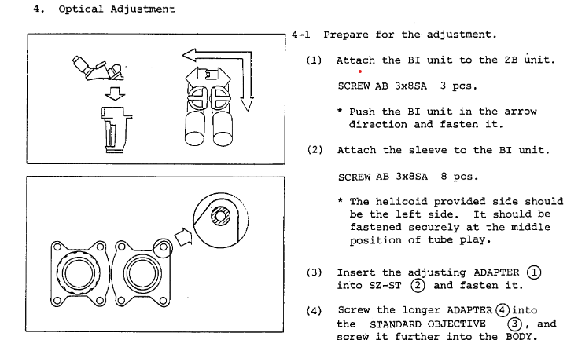

Magnification and the Olympus SZ3060
Thoughts on different magnifying devices
Stereo microscopes are not the only way to get a better look at dense SMT circuits (or other small things), of course. In my opinion, however, a good stereo microscope is the most versatile of the lot.
- Stereo microscopes -stereoscopic
- Head mounted magnifiers -stereoscopic
- Large single lens magnifiers -stereoscopic
- Digital microscopes -not stereoscopic
-usually have long zoom ranges - good for general work or close inspection
-well suited for documentation, especially if trinocular port is available
-takes up a lot of bench space
-most Greenough designs with fixed eyetube angles at 45 or 60 degrees have just mediocre ergonomics
-good ergonomics
-takes up no bench space
-can be used away from the bench
-basically not usable for documentation purposes
-low magnifications only
-can be unergonomic - optical path is dead vertical or only titled slightly
-takes up even more space than the stereo microscope
-single large lens usually has significant optical distortion
-low magnifications only
-can have extremely long zoom ranges
-compact compared to optical microscopes
-most practical for documentation
-most ergonomic
The Olympus SZ3060

The SZ3060 is a low-spec model in the Olympus catalog, meant to be integrated into wire bonders and wafer probers.
It can thus be aquired quite inexpensively, with some patience.
Nonetheless, it still has excellent optics and good mechanical build quality. The images have good contrast, and the resolution is high enough for any bench work.
Among other factors, there is usually a tradeoff between depth-of-field and resolution, and stereo microscopes are forced to keep the NA (numerical aperture) of the system low to ensure
a tolerable depth of field.
As shown, the reversing assembly consists of three prisms and two mirrors. In principle, the two additional mirrors cause a minor loss in contrast compared to
full prism designs like the Nikon SMZ-2B. In practice, it's hardly noticeable.
For a Greenough design, the SZ3060 has good sharpness across the field, due to the low
convergence angle of the optical paths (10 degrees) and the close spacing of the lenses. Chromatic and spherical aberrations are not noticeable throughout the zoom range, but there is a
significant pincushion distortion when photographing through the eyepieces. This effect is less pronounced when viewed by a human eye.
The most apparent downside is the 60 degree tilt of the eyetubes, which is generally less ergonomic than the typical 45 degree on most modern microscopes (even 45 degrees is not totally ideal, actually).
Traditionally, 60 degree eyetubes were very common - the Bausch and Lomb Stereozoom series (minus the SZ7), the American Optical StereoStar series, the Nikon SMZ-1, and many others all have 60 degree eyetubes.
The ergonomics can be improved by sacrificing some depth of field and tilting the microscope body downwards 10-15 degrees. At the
low magnifications that we usually use for soldering, the field is often deep enough that the tilt does not cause appreciable distortion
or degradation of focus.
Optical alignment
Stereo microscopes require very fine alignment between the two optical paths to present good images that do not cause fatigue for the user. This is complicated by zoom mechanisms,
in that alignment needs to be maintained at all zoom levels.
By my estimation, there are four main types of misalignments in a zoom stereo microscope:
- Misalignment between left and right images
- Decentration of image when zooming
- Loss of focus when zooming
- Decentration of image when adjusting interpupillary distance
The SZ3060 service manual doesn't mention it, but a quick fix for misalignment #1 can be done without touching the zoom lenses - provided that misalignments #2, #3, and #4 are not present or very minor. If there is major decentration or loss of focus through the zoom range, then the full disassembly and proper alignment should be done.  The four screws attaching each eyetube assembly to the reversing assembly (called out as AB 3x8SA 8 pcs. in step 2) can be loosened and the eyetubes can be translated as necessary to correct for slight discrepancies between the left and right images.
Test images
 4.5X magnification. 0.5X lens * 0.9X objective
4.5X magnification. 0.5X lens * 0.9X objective
 20X magnification. 0.5X lens * 4X objective
20X magnification. 0.5X lens * 4X objective
 40X magnification. 1X (no lens) * 4X objective
40X magnification. 1X (no lens) * 4X objective
 80X magnification. 2x lens * 4X objective
80X magnification. 2x lens * 4X objective
Setup cost
| Part | Cost (CAD) |
| SZ3060 microscope pod (used) | 50 | 10x/23 adjustable eyepieces | 50 |
| 0.5X and 2X auxiliary lens | 30 |
| Basic monitor arm | 40 |
| Focussing mount 76mm (used) | 80 |
| Total | 250 |
6632B

This is my ancient 6632B (On top of it is a less ancient Amrel PPS-2322). Cool 0-20V power supply, and also can sink a programmable 0-5A in the second quadrant, like a pseudo electronic load. It has a couple of important mods:
- Added front output terminals
- RIFA caps replaced with new polymer caps
- New tantalum caps for the +/-15V regulators (and design errors corrected!)

The wiring behind the front panel. The sense lines can be directly connected to the outputs, or routed out to the sense terminals.

The mains filter with replacement caps fitted.

The output cables run all the way to this connector at the rear of the unit.
54624A

This is my ancient 54624A. It's another early MegaZoom II-powered unit, like the well-known 54622D. For everything ~20MHz and below, this is great. It's actually more responsive than the new Teks at my school.

This one came with a host of issues, most of them caused by a dead NVRAM backup battery. The original part is a very elusive CR2354-GUFN,
so it was replaced with a little socketed CR2032. Only the user cal and settings are stored in NVRAM, so mercifully it doesn't need to be powered while doing the replacement (unlike on some HP multimeters).

The new battery installed on the mainboard.
KP61 in 1/48 scale

Just for fun. It's a Toyota KP61 made from scratch out of paper.

A look inside the cabin.

A look inside the engine bay. I think that's meant to be a 4AGE in there.
Low-force tensile tester

This was a temporary testbed for SPI TFT displays, ADC interfacing, stepper driving using STM32. I'll need to rebuild this someday.
Gateron brown (keyboard switch) force vs. displacement curve as measured by a 1kg load cell.